Water - Life's Solvent
Callout
Water: Life’s Solvent
- Every time we feel thirsty, we are reminded about how much.
- our bodies depend on water for survival. In fact, all living organisms depend on water.
.png)
- Up to 60 % of human body weight comes from water. About 70 % of the brain, 90 % of the lungs, and 22 % of bone tissue is water.
- Virtually all cellular processes occur in water since cellular components are dissolved, suspended, and surrounded by water. Without water, we would not exist.
Callout
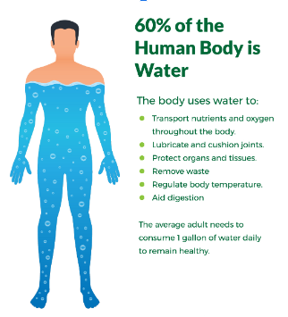
- Water is a ubiquitous substance—all living organisms contain water, and many kinds of organisms live directly in water.
- Jellyfish are about 95 % water. They have one of the highest ratios of water content to body mass in the animal kingdom.
Callout
1.png)
Properties of Water
- Water is the most abundant liquid on Earth and is known as the “universal solvent.”
- Water molecules are special because of their size, shape, polar structure, and ability to associate with each other through hydrogen bonding.
- Hydrogen bonds form readily between water molecules in both liquid water and ice. In liquid water, each water molecule forms an average of 3.4 hydrogen bonds with its neighboring water molecules.
- This bonding forms an arrangement known as the water lattice. The water lattice is a unique feature of water.
- Hydrogen bonding forms the liquid water lattice.
- Each water molecule makes an average of 3.4 bonds with its neighbors.
Callout
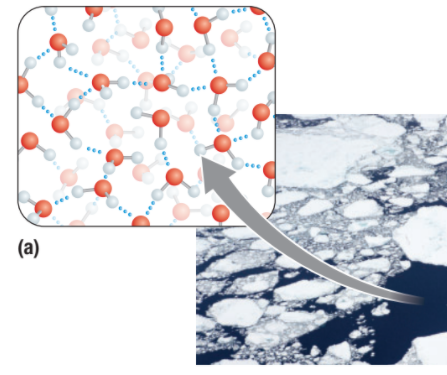
- In liquid water, the hydrogen bonds that hold the lattice together constantly break and reform, allowing water molecules to slip past one another and reform the lattice in new positions.
- This gives liquid water its fluid properties.
- In ice, the water lattice is a rigid crystalline structure.
- Each water molecule in ice forms four hydrogen bonds with its neighbouring water molecules.
- The rigid ice water lattice spaces the water molecules farther apart than they are in the liquid water lattice
Callout
- Because of the greater spacing, water has the unusual property of being about 10 % less dense in its solid state than in its liquid state.
- Hydrogen bonding forms the ice water lattice.
- Each water molecule bonds to four of its neighbors, creating a greater distance between the water molecules in ice.
- As a result of its stabilizing hydrogen bond lattice, water has a high specific heat capacity.
- Specific heat is the amount of thermal energy that is required to increase the temperature of a given quantity of water by one degree Celsius.
- As thermal energy flows into a sample of water, much of it is absorbed by the process of breaking hydrogen bonds.
- Therefore, the temperature of water increases relatively slowly as thermal energy is added.
- Cohesion (the attraction of water molecules to other water molecules), adhesion (the attraction of water molecules to different molecules), surface tension, and capillary action play huge roles in life.
- Water molecules themselves are held together by hydrogen bonds, the weakest bonds. Negatively charged oxygen atoms are attracted to positively charged hydrogen atoms and bond with hydrogen bonds to form H2O. Cohesion is the attraction of these H2O molecules. Adhesion is the attraction of water molecules to different molecules.
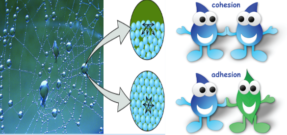
Callout
- Surface tension is a result of the cohesive forces between water molecules.
- Hydrogen, a positively charged atom, and oxygen, a negatively charged atom, are attracted to each other among water molecules since opposite charges attract.
- Because of this attraction, water is held together in droplets. Certain organisms like water striders and spiders are able to walk across the surface of water because of surface tension. Paper clips are also able to float on water because of surface tension.
- The surface tension allows this water strider to walk on water.
WHY ARE COHESION AND ADHESION IMPORTANT TO LIFE?
- One way cohesion and adhesion are important to life is capillary action. Capillary action is vital for plant life and is the result of adhesion and cohesion.
- The adhesion of water to vessels inside a plant allows water to travel throughout a plant.
- Cohesion holds the water together so all of the liquid is dragged upward into the plant against gravity. Cohesion helps the water molecules stick together as they are transported up the xylem tubes, while adhesion helps the water molecules stick to the cell walls as they are transported.
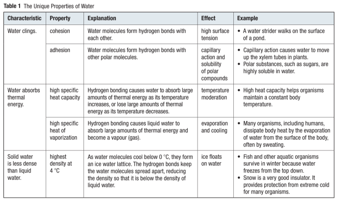
Aqueous Solutions
- Water molecules are small and strongly polar—two qualities that allow them to readily surround polar and charged molecules and ions of other substances.
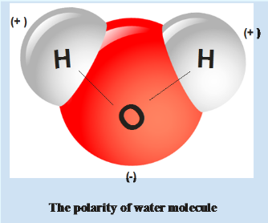
- The surface coat of water, called a hydration shell, reduces the attraction between the molecules or ions of another substance and promotes their separation.
- This separation allows the substance to go into solution. As the molecules and ions dissociate, water molecules surround them, forming the hydration shell.
- Aqueous Solutions
- The hydration shell tends to prevent the ions from re-associating.
The result is an aqueous (water-based) solution in which water is the solvent and the molecules or ions of the other substance are the solutes.
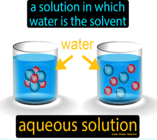
- A typical ionic substance is sodium chloride, commonly known as table salt.
- Sodium chloride dissociates in water because water molecules quickly form hydration shells around the Na+ and Cl- ions of the salt crystals.
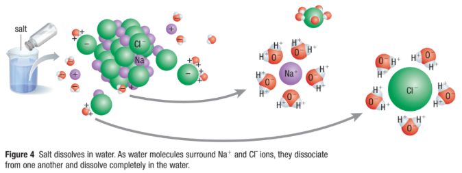
- Hydrophilic (water-loving) molecules are polar or charged molecules that are strongly attracted to water
- Hydrophobic (water-fearing) molecules are nonpolar molecules that are not strongly attracted to water
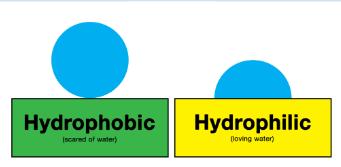
- Small and modest-sized hydrophilic substances are highly soluble in water, while hydrophobic substances have very low solubility in water.
- As the solvent inside all our cells and in our blood, water dissolves thousands of solutes that are necessary for life.
- Because these substances are dissolved, they can float around and collide with each other, allowing chemical reactions to occur.
- Ionization and pH
- Perhaps the most critical property of water, aside from its hydrogen bonding properties, is its ability to separate or dissociate into ions.
- Pure water is more than just H2O molecules. Any given sample of water at 25 degrees Celsius is a mixture of H2O molecules, OH- ions, and H3O+ ions.
- Autoionization is the process in which a molecule spontaneously dissociates into ions.
- Autoionization always produces equal numbers of hydronium and hydroxide ions.
- Other dissolved substances, however, can alter this equal balance of ions.
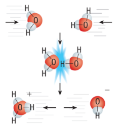
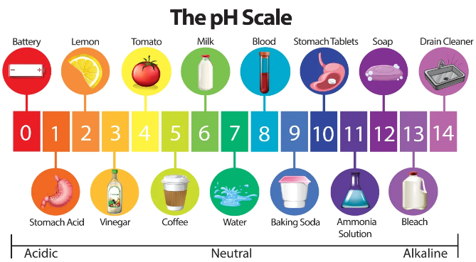
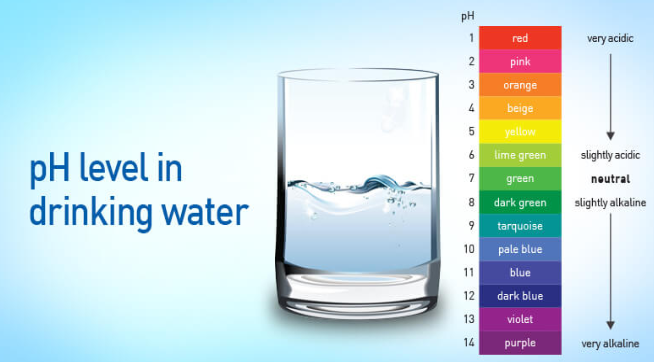
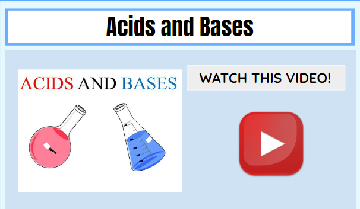
- When the concentration of hydronium ions, H3O+, in a solution is greater than the concentration of hydroxide ions, OH-, the solution has the properties of an acid.
- Acidic solutions are characterized by a sour taste, the ability to conduct electricity, and the ability to turn blue litmus paper red.
- Acids increase the hydronium ion concentration when dissolved in water and, in high enough concentrations, will cause a chemical burn. Acids contain at least one ionizable hydrogen ion in their chemical structure.
- Reaction of hydrogen chloride with water to produce hydrochloric acid:

- When the concentration of OH- ions in a solution is greater than the concentration of H3O+ ions, the solution has the properties of a base: a bitter taste and slippery feel, the ability to conduct electricity, and the ability to change red litmus paper blue.
- In high enough concentrations, bases are caustic and will cause a painful chemical burn if brought in contact with the skin.
- Strong ionic bases, such as sodium hydroxide, may contain an OH group and thus dissociate when added to water, releasing OH- ions:

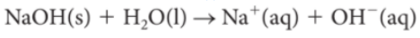
- The concentration of H3O1 ions, compared to the concentration of OH- ions, in an aqueous solution determines the acidity of the solution.
- Scientists measure the acidity of a solution using a numerical scale from 0 to 14, called the pH scale. The scale is based on logarithms to make the values more manageable:
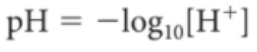

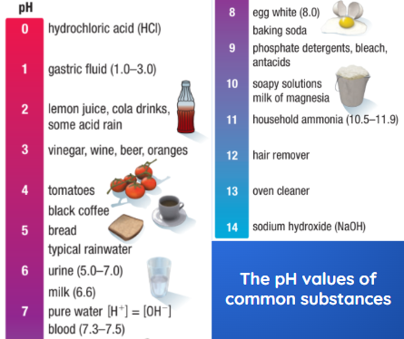
The pH of water in the environment is also critical for the survival of most organisms on Earth. The changing pH of freshwater bodies and oceans has a serious impact on ecosystems that depend on these water supplies for food or habitat.
- The pH of the oceans is about 8.
- The burning of fossil fuels is increasing atmospheric concentrations of carbon dioxide, which in turn is resulting in an increase in carbon dioxide entering oceans and freshwater.
- As more carbon dioxide is absorbed by ocean water, the water and the carbon dioxide form carbonic acid and the water becomes more acidic.
- Strong and Weak Acids and Bases
- The strength of an acid or base depends on the degree to which it ionizes when dissolved in water.
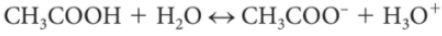 - A strong acid, such as HCl, and a strong base, such as NaOH, are completely dissociated in an aqueous solution.
- This means that all the molecules of HCl release H+ ions that interact with water to form H3O+, and all the OH- ions are released from NaOH and increase the hydroxide ion concentration of the water in which they are dissolved.
A weak acid and a weak base only partially ionize in water.
- For example, only 10 % of ammonia, a weak base, forms ammonium ions in water. Similarly, only 1.3 % of acetic acid, CH3COOH, a weak acid, dissociates in water:

- The reaction of a weak acid or a weak base in water is a reversible reaction. This means that the molecules can dissociate in water to form a weak acid or base, and the ions can re-associate once in solution.
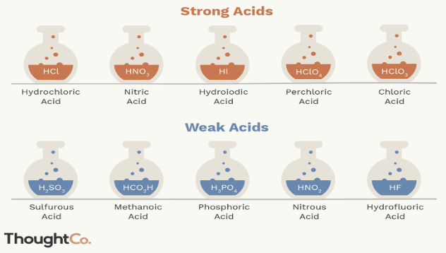
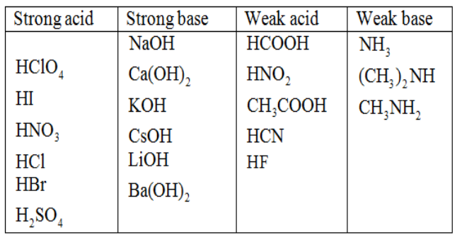
Determine whether the following is a strong acid (SA), strong base (SB), weak acid (WA), or weak base (WB).
Encircle the correct answer.
- HI (SA, SB, WA, WB)
- LiOH (SA, SB, WA, WB)
- HNO2 (SA, SB, WA, WB)
- HF (SA, SB, WA, WB)
- NH3 (SA, SB, WA, WB)
- KOH (SA, SB, WA, WB)
- HCl (SA, SB, WA, WB)
- HBr (SA, SB, WA, WB)
- 9. NaOH (SA, SB, WA, WB)
- 10. HCOOH (SA, SB, WA, WB)

Neutralization Reactions and Buffers
- Water has a neutral pH value of 7.
- It is neither an acid nor a base. However, when an acid and a base react with one another, the products of the reaction include water and salt.
- This type of reaction is called a neutralization reaction, since its products, water, and salt, are neutral.
- For example, when the acid HCl and the base NaOH react with one another in solution, the products that are formed are water and a salt, sodium chloride.
- Living organisms have some control over the internal pH of their cells by using buffers.
- A buffer is a chemical that compensates for relatively small pH changes by absorbing or releasing hydrogen ions.
- When a biological reaction releases excess H+ ions, buffers combine with the H+ ions so they are no longer free in the solution.
- The buffering mechanism that helps to maintain a healthy blood pH in the narrow range of 7.35 to 7.45 is a good example of how buffers work in your body.
- In humans and many other animals, a buffering system that is based on carbonic acid, H2CO3, which is a weak acid, helps to maintain proper blood pH levels.
- In water solutions, carbonic acid dissociates readily into bicarbonate ions, HCO3-, and H+.
- Like dissociation reactions in weak acids, this dissociation reaction is reversible
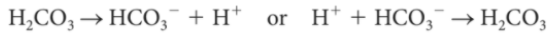